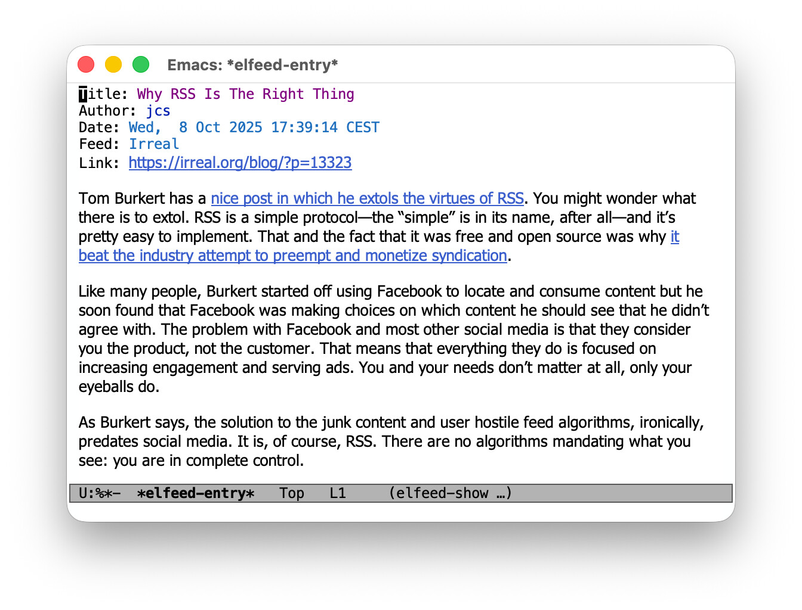
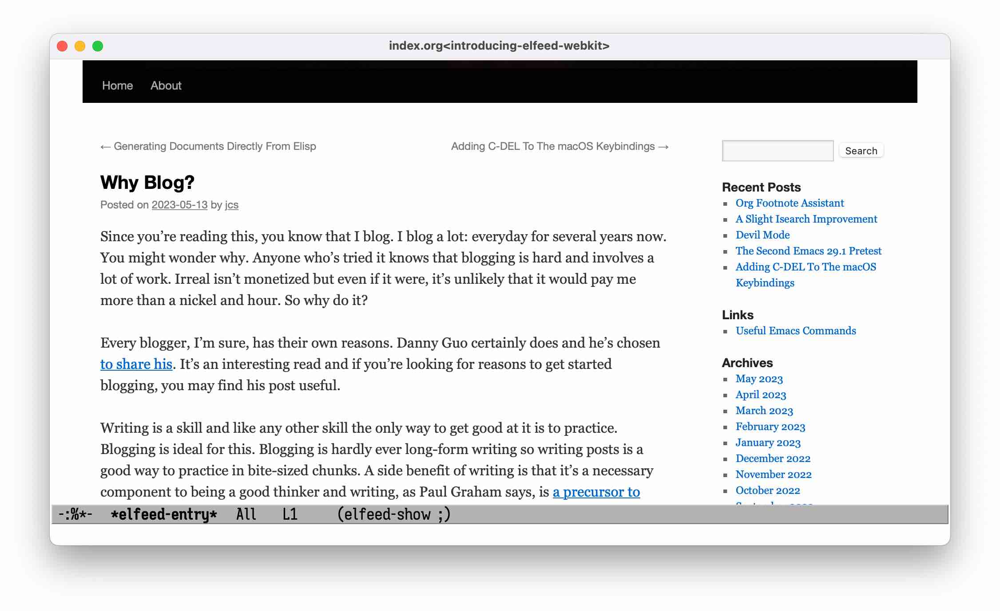

Introducing elfeed-webkit
Published 2023-05-22
Elfeed is great, but …
Elfeed is an extensible web feed reader for Emacs, and it's great. I'm subscribed to a couple dozen feeds, and I use elfeed almost every day to check for news.
But …
- most of the feeds I'm subscribed to are for text-heavy blogs, but not all of them are.
- most of the blogs include the post contents in the feed's entry, but not all of them do.
- most of the entries render well as text via Emacs'
shr1 library, but not all of them do. - some of the blogs have dynamic content (think comments) that's not included in the feed.
For entries that don't work well in a text-based feed reader, elfeed provides a way to open their source link in a web browser via elfeed-search-browse-url (conveniently bound to b).
While that works, it means leaving Emacs, and more importantly, leaving the context of elfeed. In order to move to the next entry, or to tag or bookmark the entry, you'd have to switch back to Emacs first.
Xwidgets to the rescue
As usual, Emacs has us covered: when compiled with xwidget support, it knows how to embed a webkit widget into a buffer, and browse arbitrary URLs in it.
Wouldn't it be great if …
Enter elfeed-webkit
Inspired by the possibilities (and surprised that no such package exists yet2), I wrote elfeed-webkit to integrate elfeed with Emacs' webkit widgets support.
Fortunately, elfeed delivers on its promise to be an "extensible web feed reader": the way feed entries are rendered is entirely pluggable via its elfeed-show-refresh-function variable.
Let's compare our options.
(a) Elfeed's familiar default shows mail-style headers for the entry's title, author, etc., a list of enclosures (if any), and an shr-based rendering of its content.
Note that there's no network activity required at this point: elfeed merely displays the contents of the previously downloaded feed entry.
As a result, displaying and entry feels instantaneous.

Figure 1: A blog post rendered with elfeed's default.
(b) Elfeed-webkit's alternative puts a webkit widget into the buffer and opens the entry's source link in it.
It enables a webkit-related toolbar and keybindings to allow for a convenient browsing experience, and it keeps most of the elfeed-related keybindings around as well.
Because the link is visited online and in a full-blown webkit widget, it is definitely slower and more resource-hungry than elfeed's offline text variant.

Figure 2: A blog post rendered with elfeed-webkit.
Both options have their uses, so elfeed-webkit provides an easy way to toggle between these alternatives in an entry's buffer via elfeed-webkit-toggle.
And, likely more useful, it supports automatic enabling of webkit based on a feed entry's tags: if you know that a certain feed never renders well as text, just add the webkit tag to it and all its new entries are going to be displayed with webkit automatically.
Taking this further
I've been using elfeed-webkit for a while now, and it's been working well for me.
The one thing I feel could be better is its performance: starting up a new xwidget session for each and every feed entry is not exactly a lightweight operation, and its noticeable when jumping from one entry to the next.
I'll want to follow the lead of Boris Glavic's xwidgets-reuse package and see if I can reuse an existing webkit widget without breaking elfeed's concept of rendering feed entries in a dedicated buffer/dedicated buffers.
Closing thoughts
This post provided a brief introduction to the elfeed-webkit package – if you're interested in trying it out yourself, check out its repo for installation instructions and more details regarding its usage and customization options.
Finally, if you find any of this useful or have ideas on how to make it better, I'd love to hear from you. Thanks!
Footnotes:
shr stands for "Simple HTML Renderer", an Emacs built-in package that "does not do CSS, JavaScript or anything advanced: It's geared
towards rendering typical short snippets of HTML, like what you'd find in HTML email and the like."
I didn't find any in either ELPA nor MELPA, at least. There's xwidgets-reuse, which enables reuse of xwidgets sessions and comes with an example setup for elfeed entry browsing in its documentation, though. Do check it out!